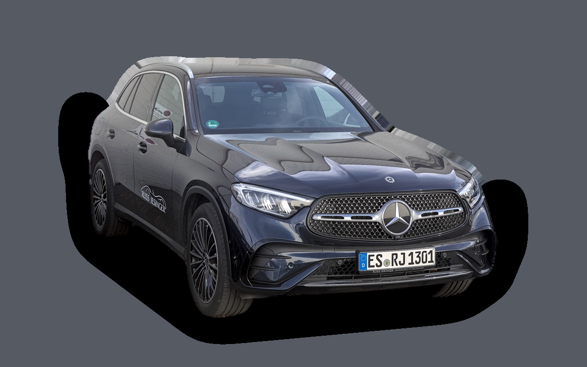

Vad kostar en Mercedes-Benz GLC per månad?
En Mercedes-Benz GLC från 2023 kostar cirka 5 945 kr i månaden, allt inräknat.


Månadskostnad per årsmodell
| Årsmodell | Version i beräkningen | Pris | Per månad | Betyg |
|---|---|---|---|---|
| 2026 | GLC 220 d 4MATIC, Progressive | 619 000 kr | 7 339 kr | C |
| 2023 | GLC 220 d 4MATIC, Progressive | 499 000 kr | 5 945 kr | A |
Räknat på 5 års ägande och 1 250 mil per år, med bränslepriser från 2026-10-22. Månadskostnaden innehåller värdeminskning, drivmedel, service och reparationer, försäkring och fordonsskatt.
Så fördelas kostnaden för en 2023:a
- Värdeminskning: 2 463 kr/mån
- Drivmedel: 1 660 kr/mån
- Service och reparationer: 812 kr/mån
- Försäkring: 709 kr/mån
- Fordonsskatt: 302 kr/mån
Leasa eller köpa ny?
Mercedes-Benz PrivatLeasing erbjuder GLC 300 4MATIC electric Advanced Edition från 7 995 kr i månaden i 36 månader och 1 500 mil per år. Så mycket kostar det jämfört med att köpa samma bil ny för 719 000 kr och sälja den efter 36 månader, räknat på 1 250 mil per år och 5 procents ränta.
Leasa är billigast 677 kr mindre per månad, 24 372 kr på 36 månader.
| Per månad | Leasa | Köpa |
|---|---|---|
| Leasingavgift, 1 250 mil per år | 7 995 kr | – |
| Uppläggnings- och aviavgift | 84 kr | – |
| Värdeminskning | – | 5 878 kr |
| Ränta på pengarna, 5 % | – | 2 555 kr |
| Service och reparationer | ingår | 324 kr |
| Drivmedel | 406 kr | 406 kr |
| Försäkring | 932 kr | 932 kr |
| Fordonsskatt | 30 kr | 30 kr |
| Totalt per månad | 9 447 kr | 10 124 kr |
| Totalt på 36 månader | 340 092 kr | 364 464 kr |
Erbjudandet gäller 1 500 mil per år. Kör du mindre blir leasingavgiften densamma. Mercedes-Benz PrivatLeasing: GLC 300 4MATIC electric Advanced Edition, 36 månader, 1 500 mil per år, service ingår, fast avgift. Uppläggningsavgift 695 kr och aviavgift 65 kr i månaden. Källa: mercedes-benz.se, avläst 27 oktober 2026, gäller till och med 31 december 2026.
Köpa: 719 000 kr för en ny bil i samma version, och 507 397 kr tillbaka när du säljer den efter 3 år. Restvärdet bygger på annonspriserna för 3 år gamla bilar, justerat för att du kör 3 750 mil på 3 år i stället för typiska 7 600 mil. Räntan är vad pengarna kostar: ränta på ett billån, eller räntan du går miste om på sparade pengar. Drivmedel, försäkring och skatt är desamma. Övermil och onormalt slitage betalas när leasingbilen lämnas tillbaka, och byter du in en köpt bil hos en handlare får du oftast mindre än annonspriset.
Räkna med din egen körsträcka och ränta · Alla leasingbilar jämförda
Begagnatpriser i annonser
| Årsmodell | Medianpris | Annonser | Typiskt miltal |
|---|---|---|---|
| 2026 | 714 400 kr | 29 | 1 700 mil |
| 2025 | 689 000 kr | 15 | 1 900 mil |
| 2024 | 599 000 kr | 52 | 5 500 mil |
| 2023 | 529 000 kr | 54 | 7 800 mil |
Medianpriset i svenska annonser per årsmodell i oktober 2026 (källa: Blocket). Annonspriser är utgångspriser, och slutpriset kan bli lägre.
Motorer och versioner
| Motor | Drivmedel | Effekt | 0–100 km/h | Förbrukning (WLTP) | Räckvidd | Årsmodeller | Pristillägg |
|---|---|---|---|---|---|---|---|
| GLC 220 d 4MATIC | Diesel | 197 hk | 8 s | 5,8 l/100 km | – | från 2023 | – |
| GLC 300 4MATIC | Bensin | 258 hk | 6,2 s | 7,8 l/100 km | – | från 2023 | +30 000 kr |
| GLC 300 e 4MATIC laddhybrid | Laddhybrid | 313 hk | 6,7 s | 1,8 l/100 km + 17 kWh/100 km | – | från 2023 | +60 000 kr |
| GLC 300 4MATIC el | El | 421 hk | 4,7 s | 16 kWh/100 km | 613 km | från 2026 | +100 000 kr |
- Utrustning: Progressive, AMG Line (+45 000 kr), AMG Line Premium (+85 000 kr)
Fakta
- Kaross
- SUV
- Årsmodeller
- sedan 2023
- Nypris från
- 619 000 kr
- Bagage
- 620 liter
- Euro NCAP
- 5 av 5 stjärnor
- Nybilsgaranti
- 3 år
- Driftsäkerhet
- 4,5 av 5
- Helförsäkring, uppskattning
- 10 800 kr/år
- Service, uppskattning
- 5 800 kr/år
Vanliga fel att ha koll på
- Automatlåda 9G-Tronic: ventilhus och läckage, reparation cirka 5 500 kr
- AdBlue-system och NOx-givare (diesel), reparation cirka 6 000 kr
- AIRMATIC luftfjädring (om bilen har det), reparation cirka 8 000 kr
Felen gäller vissa motorer och årsmodeller. I kalkylatorn räknas risken för just den version du väljer.
Fördelar och nackdelar
Fördel
Mycket bekväm, och laddhybriden går över 100 km på el.
Nackdel
Dyr att köpa och att serva.
Liknande bilar
 Polestar 45 920 kr/mån som 2026:a
Polestar 45 920 kr/mån som 2026:a Skoda Kodiaq6 029 kr/mån som 2026:a
Skoda Kodiaq6 029 kr/mån som 2026:a Peugeot 30085 853 kr/mån som 2026:a
Peugeot 30085 853 kr/mån som 2026:a Audi Q55 837 kr/mån som 2023:a
Audi Q55 837 kr/mån som 2023:a Volkswagen Tiguan6 085 kr/mån som 2026:a
Volkswagen Tiguan6 085 kr/mån som 2026:a BMW X35 781 kr/mån som 2023:a
BMW X35 781 kr/mån som 2023:a
Uppdaterad 2026-10-28 · annonsdata okt 2026